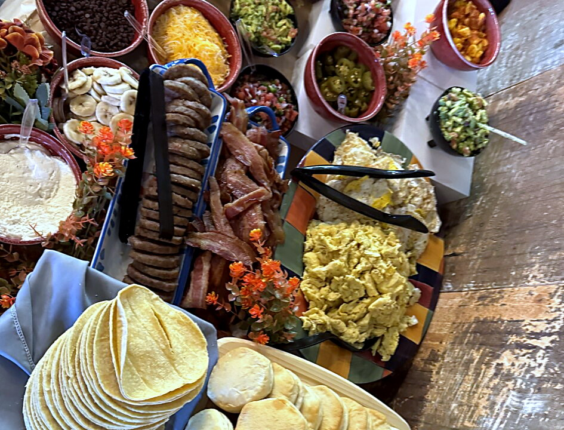

Charcuterie Chick · Tomball, Texas
Grazing tables, boards and Houston's largest charcuterie cart.
Elegance without the cost. Tomball, The Woodlands, Spring and Conroe.
See the menus and prices↗5.0 on The Knot · Best of Weddings 2026

What I do
I set the table. Every table runs 90 minutes. You talk to your guests.

Grazing tables for 50 guests and up. The cart, boards, sweets and sips for everything else. I worked front of house and back of house for more than 35 years, so the food and the service come from the same person.
About Tricia ↗The tables
Five tables, from $24 a person.
The smallest has two sliders, meat and cheese, seasonal fruit, hummus, almonds, two salads, roasted and raw vegetables and a dip. The Holy Grail has five cheeses, five meats and two sliders for 75 or 150 guests.
Menus and prices ↗ Grazing tables 01—05 ↗
Grazing tables 01—05 ↗Photos
From parties I catered. ↗Every photo here is a table I set.
From my customers
What they said.
“The charcuterie board was fresh, well-balanced, and beautifully arranged.”
“Beautifully balanced, incredibly fresh, and full of rich flavors.”
“Wonderfully seasoned, warm, and comforting.”

About Tricia
Hi, I'm Tricia.
I spent more than 35 years in restaurants. I've worked the floor and I've worked the line. I take one party at a time.
About Tricia ↗